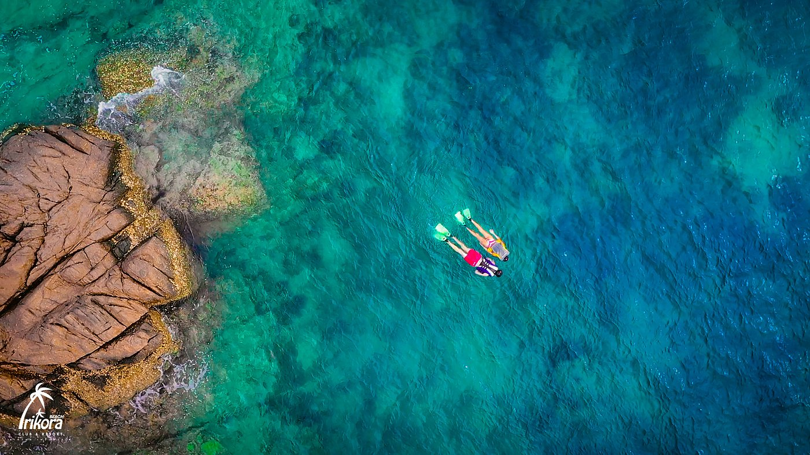
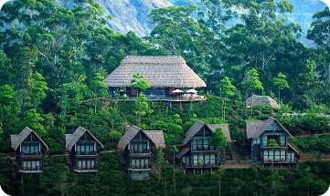

Location
Refreshing
Beautiful Ambience
Bintan
Beautiful and Charming
Pick a date
Kepulau Riau
Temukan keindahan sejati di Kepulauan Riau, surga tropis yang
menyajikan panorama alam menakjubkan, pantai berpasir putih, dari
pulau bintan
Trikora Beach
Terletak di pesisir timur Pulau Bintan, Pantai Trikora adalah
surga tropis dengan pasir putih yang lembut dan air laut jernih
kebiruan. Pantai ini menjadi destinasi favorit wisatawan karena
keindahan alamnya yang masih alami dan suasana yang tenang.
Cocok untuk bersantai, berenang, atau sekadar menikmati
pemandangan laut yang memukau
Autentik dan menenangkan, Pantai Trikora menawarkan pengalaman
wisata yang jauh dari hiruk pikuk kota. Jangan lupa mencoba
kuliner laut segar dari warung-warung sekitar pantai.
Why Trikora Beach?
Pantai Trikora bukan sekadar destinasi wisata biasa. Keindahan
pasir putih yang membentang luas, ombak yang tenang, serta
hamparan pohon kelapa menciptakan suasana tropis yang sempurna
untuk melepas penat. Suasana yang damai menjadikannya tempat
ideal untuk liburan bersama keluarga, pasangan, atau bahkan solo
traveler.
Dibandingkan pantai lain, Trikora menawarkan pengalaman yang
lebih otentik dan alami, jauh dari keramaian wisata komersial.
Di sini, Anda bisa menikmati keindahan alam yang sesungguhnya,
tanpa gangguan.
From The Gallery
Pantai Trikora memiliki keindahan yang tiada tara, Dengan Sunset dan Sunrise menyejukan mata. sehingga cocok bagi pelancong yang mencari kedamaian dan ingin merasakan suasana pantai yang masih alami.
.jpg)

